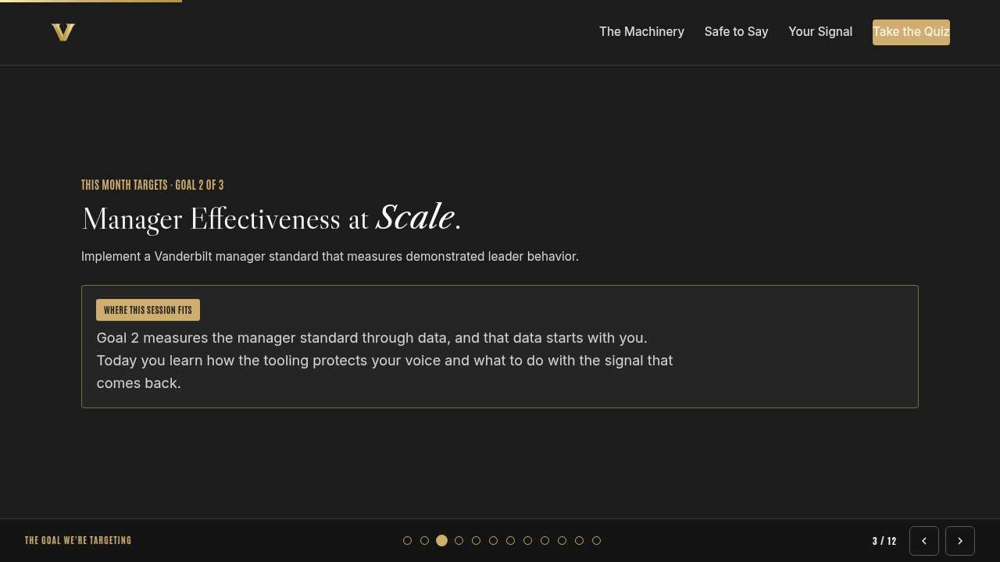
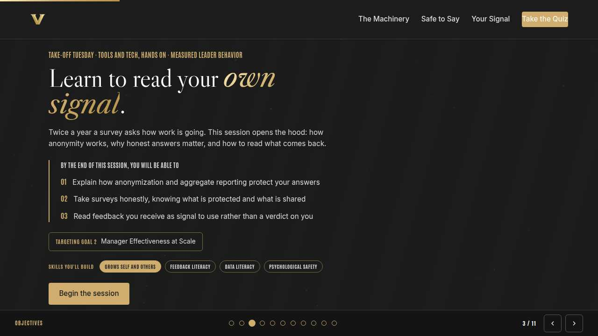
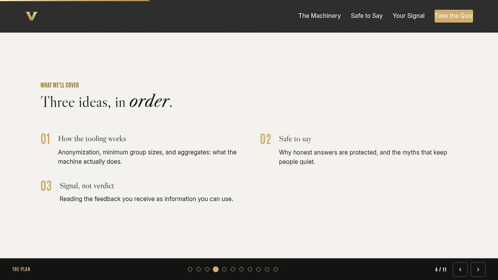
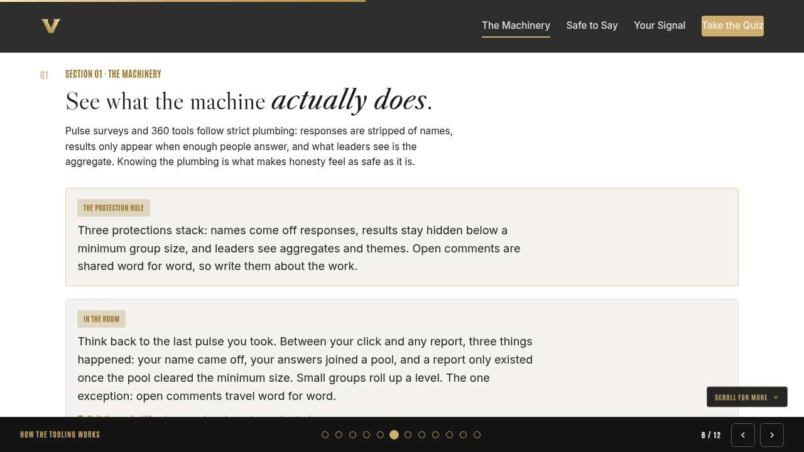
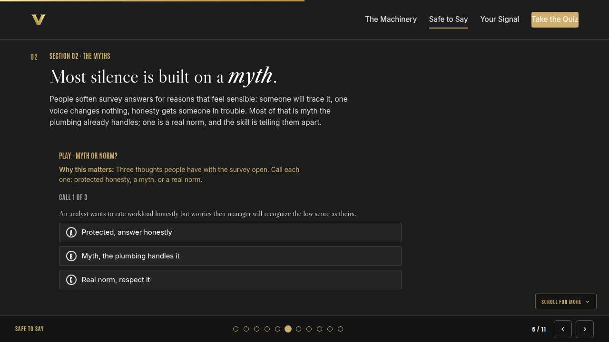
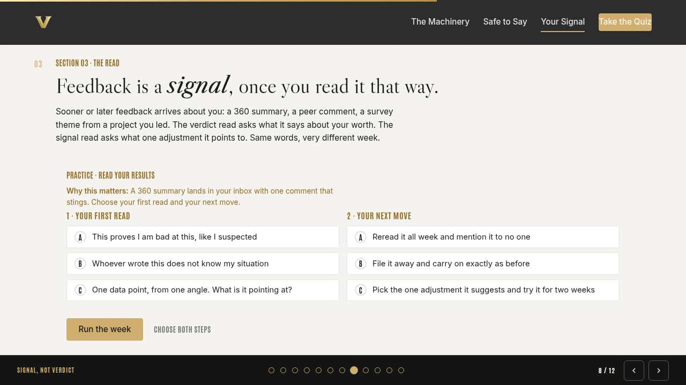
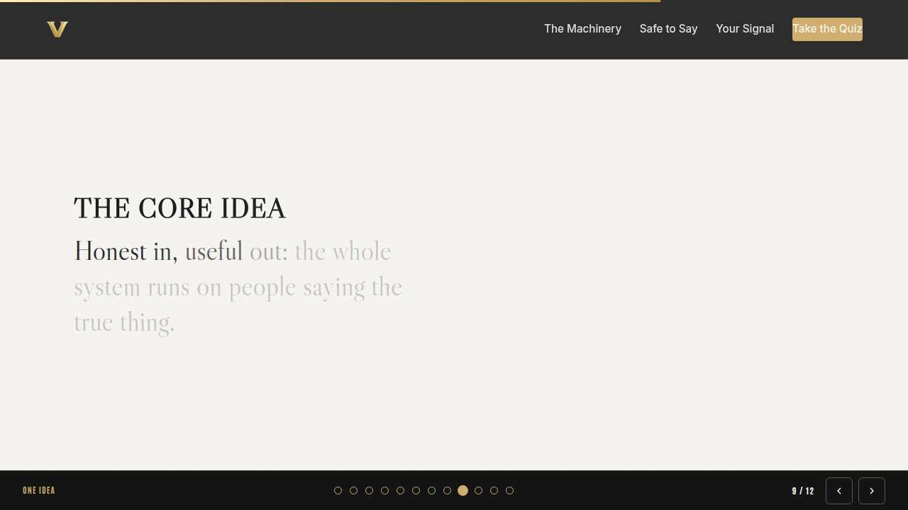
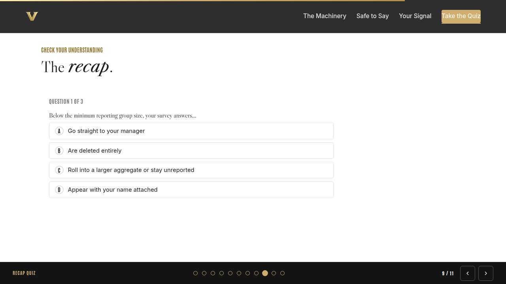
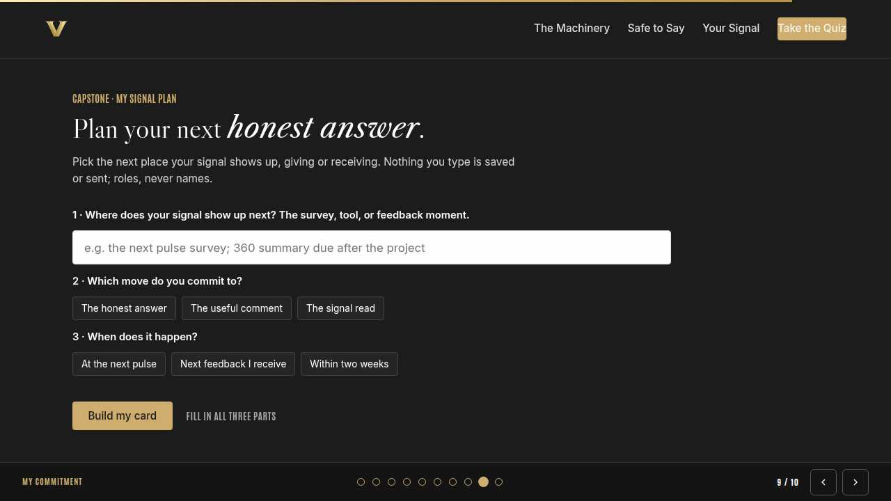
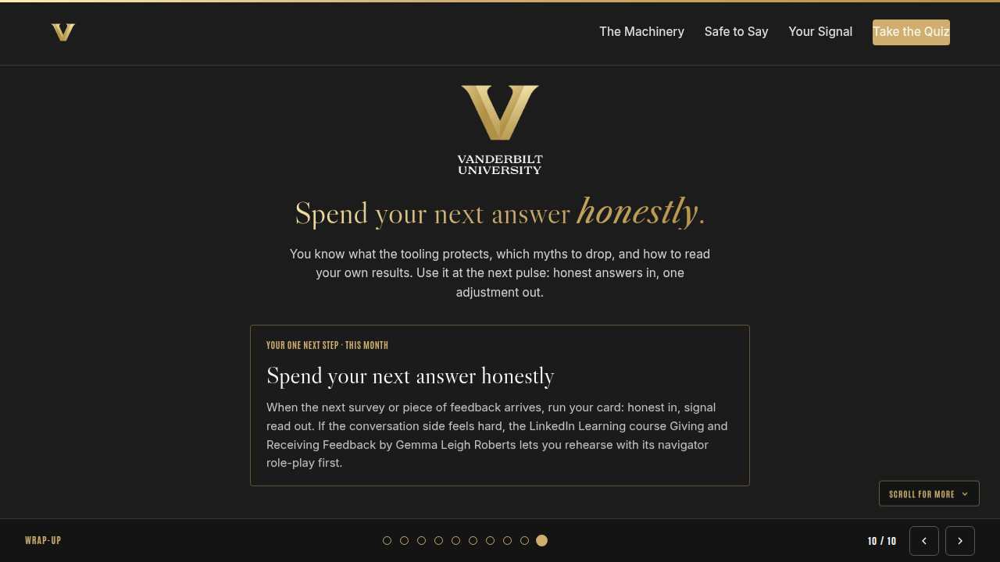

Vanderbilt · Anchor's Edge · ATD facilitator guide · print edition
Your Own Signal, the facilitator guide

Run of show
| Screen | Full (min) | Core (min) |
|---|---|---|
| Welcome / QR | 2 | 1 |
| The mission | 2 | 1 |
| The goal we are targeting | 2 | 1 |
| Objectives | 1 | 1 |
| Agenda | 1 | skip |
| How the tooling works | 8 | 6 |
| Safe to say | 10 | 7 |
| Signal, not verdict | 9 | 6 |
| The core idea | 1 | skip |
| Recap quiz | 4 | 3 |
| Capstone commitment | 4 | 3 |
| Closing | 1 | 1 |
| Total | 45 | 30 |
The goal this month serves
Goal 2, Manager Effectiveness at Scale.
Audience
All Vanderbilt staff in the Anchor's Edge weekly rhythm; many attendees manage nobody, so every example stays on a person's own work and voice. Works for 6 to 40 on a call; breakouts run in pairs. No prerequisites.
Room setup
Virtual, instructor led: camera on, deck link in chat, breakouts of 2 available. Learners follow on their own screens via the welcome-slide link or QR. Nothing typed into the deck is saved or sent.
Materials
- Meeting platform with screen share and breakout rooms; deck link ready to paste in chat
- Facilitator machine with the facilitator edition open; notifications off
- Learners on their own devices with the learner link
- Chat open for share-outs; the capstone copy button pastes there cleanly
A week before
- Run the learner edition start to finish and do every interaction honestly; you will demo at least one live.
- Read this month's theme page on the Anchor's Edge dashboard so the goal tie-in is fluent.
- Send the invite with the learner link and one line on what to bring.
The day before
- Test screen share with the facilitator edition; confirm the notes rail is readable.
- Open the learner link on a second device; the QR must land there.
- Run the section interactions once so you can drive them without reading.
30 minutes before
- Welcome slide up as people join; link pasted in chat.
- Close every other tab; silence the machine.
- Breakout rooms pre-configured in pairs.
When things go sideways
If Screen share or the site fails mid-session: Paste the learner link in chat and narrate from your own browser; every interaction runs on learner devices without the share.
If Breakout rooms are unavailable: Run the breakout prompts as 60-second chat storms: everyone types their answer at once, you read the best three aloud.
If Someone shares a story of anonymity being broken at a past employer: Honor it without debating it: that happened, and it is why this tooling uses hard minimums and aggregates. Return to the mechanics rather than defending anyone's intentions.
If Someone asks pointed questions about a specific live survey or their own results: Take it offline warmly: specifics belong with HR or their leader. Keep the room on how the tooling works for everyone.
Tough questions, ready answers
Q: If it is really anonymous, why do I have to log in to take the pulse?
Login proves you are eligible and stops duplicates; the response is then separated from your identity before any reporting. Authentication and attribution are different steps, and reporting only ever uses the stripped version.
Q: What if my honest answer makes my manager look bad?
Aggregate signal about a manager is exactly what Goal 2 needs to work: managers are being taught this month to read it as behavior data, without defensiveness. A softened answer protects nobody; it hides the signal that could improve your own week.
Q: Nobody ever seems to act on these surveys, so why bother?
Fair challenge, and this year is the answer: the manager standard is now measured partly through this data, which means your signal has somewhere to go. Give the honest answer and watch what leaders do with it; that visibility is new.
Copy-paste templates
Pre-work invite (paste into the calendar invite)
Subject: Tuesday, 45 minutes on the feedback machinery. Ever softened a survey answer just in case? This session shows exactly what happens after you click submit. Live and interactive; have the session link open on your own screen.
7-day pulse (send one week after)
Subject: Honest in, useful out? Three lines, reply whenever: 1) Did a survey or piece of feedback reach you this week? 2) Did the honest version go in? 3) What signal did you read out of what came back?
After the session
Seven days out, send the pulse: 'Did you take a survey or receive feedback this week? Did the honest version go in? What signal did you read out?' Count of self-reported honest completions is the Level 3 signal for the month.
Welcome / QR Full 2 min · Core 1
Get everyone into the deck on their own screen and set the tone: 45 minutes, live, hands on.
Say
“Welcome to Take-Off Tuesday. Scan the code or click the link in chat so this session runs on your screen too. Forty-five minutes, one focus: Pulse and 360 tooling: reading your own signal.”
Do
- Slide up as people join; link pasted in chat every few minutes.
- State the norm once: type into your own screen, nothing you enter is saved or sent.
Watch for: People lurking without the deck open. The interactions only land if the deck is on their screen.
Transition: “Before the topic, thirty seconds on why Vanderbilt is asking for this hour.”
The mission Full 2 min · Core 1
Anchor the session in the Chancellor's charge so the next 40 minutes read as mission work, not admin.
Say
“This year of learning hangs off one sentence from the Chancellor: Vanderbilt will define the great university of the 21st Century and be it. A university that intends to define the century has to hear itself clearly, and pulse data is how Vanderbilt listens at scale. Honest signal from every staff member is Exceptional Core Operations in its rawest form: the truth, on time.”
Do
- Read the mission line slowly, once.
- Point at the tie-in line and let it sit; no discussion needed here.
Transition: “That is the why. Here is the number we are moving.”

The goal we are targeting Full 2 min · Core 1
Name the enterprise goal this month serves.
Say
“Every month of Anchor's Edge lands on one of three enterprise goals. This month is Goal 2, Manager Effectiveness at Scale: Implement a Vanderbilt manager standard that measures demonstrated leader behavior. Goal 2 measures the manager standard through data, and that data starts with you. Today you learn how the tooling protects your voice and what to do with the signal that comes back.”
Do
- Read the goal once, plainly.
- One line, not a lecture: this session is one of the moves that serves it.
Transition: “Here is what you will be able to do in 45 minutes.”

Objectives Full 1 min · Core 1
Set the contract for the session in under a minute.
Say
“By the end of this session: explain how anonymization and aggregate reporting protect your answers; take surveys honestly, knowing what is protected and what is shared; read feedback you receive as signal to use rather than a verdict on you. That is the whole contract.”
Do
- Read the three objectives briskly; do not elaborate yet.
Transition: “Three stops to get there.”

Agenda Full 1 min · Core skip
Show the path so the room can pace itself.
Say
“Three stops: how the tooling works, safe to say, signal, not verdict. Each one has something to play with, so keep the deck open.”
Do
- Point once at each stop; ten seconds each.
Transition: “Stop one.”
Core path: Core: skip the read-through, gesture at the slide in passing.

How the tooling works Full 8 min · Core 6
Demystify the plumbing: anonymization, minimum group sizes, and aggregate reporting.
Say
“Here is a thing almost nobody gets shown: what actually happens to a survey answer after you click submit. Your name comes off. Your answer joins a pool. If the pool is too small, no report exists at all. What a leader finally sees is a theme and a number, never a row with your name on it. We are opening the hood today, because people are only as honest as the plumbing lets them feel safe being.”
Do
- Read the lead once, then walk the concept card and the In the room card together; no quiz in the live room.
- Walk the three protections slowly: names off, minimum group size, aggregates only.
- Lead the discussion prompt for two or three voices, then run the breakout on what people have heard.
Ask
“What have you heard people say about who sees the answers?”
Expect:
- My manager can figure out who said what
- IT can look anything up
Respond: Both common, both myths in this tooling. The design assumes nobody should have to trust good intentions; the plumbing does the protecting.
Debrief: Three protections stack: no names, minimum group sizes, aggregates only. Comments travel word for word, so aim them at the work.
Watch for: A learner describing a past workplace where anonymity was broken. Acknowledge it happened there, then return to how this tooling is built here.
Transition: “Knowing the plumbing kills most of the myths. Let us test the rest.”
Core path: Core: skip the breakout; take myths in chat instead.

Safe to say Full 10 min · Core 7
Separate identification myths from the one real norm, so honest participation feels as safe as it is.
Say
“Every survey season, good people soften their answers for reasons that sound sensible. Someone will trace it back. One voice cannot matter. Honesty gets people in trouble. Two of those are myths the plumbing already handles. One points at a real norm: open comments travel word for word, so they should describe work, never named colleagues. Play the rounds and see if you can tell which is which.”
Do
- Run Myth or norm? live on learner screens.
- After round two, pause: ask what makes the comment norm different from the myths.
- Run the breakout on the myth people have half-believed.
Ask
“Why do the identification myths survive even after people hear how the tooling works?”
Expect:
- A story from an old employer
- Distrust travels faster than plumbing diagrams
Respond: True. Which is why the protections stay boring and mechanical on purpose: they hold whether or not anyone trusts anyone.
Debrief: Honesty is protected by design. The one real norm is about aim: comments describe the work, never a named colleague.
Watch for: The conversation sliding into whether leadership acts on results. Park it honestly: acting on signal is the leaders' half of the deal, and this month's manager sessions are exactly about that.
Transition: “So your honest signal goes in. Next: what to do when signal about you comes back out.”
Core path: Core: run the trainer, skip the breakout, take one voice on the debrief question.

Signal, not verdict Full 9 min · Core 6
Teach the signal read for received feedback: right-sized, one adjustment, time-boxed.
Say
“Now the harder direction. Sooner or later the tooling points at you: a 360 summary, a peer comment, a theme from a project you led. And one line will sting. The verdict read asks what that line says about your worth, and it will happily run your whole week. The signal read asks a smaller question: what is this pointing at, and what one adjustment would test it? Let us practice on a week you will recognize.”
Do
- Run Read your results; two minutes to make both choices and run it.
- Ask one volunteer to read their outcome aloud, weak or strong.
- Name the pattern: right-size the comment, pick one adjustment, time-box the trial.
Ask
“What makes the dismissive read, 'they do not know my situation,' so comfortable?”
Expect:
- It might genuinely be true
- It ends the discomfort instantly
Respond: Both. The move is to let it be partly true and still ask what fraction of the comment is signal. Even a clumsy comment usually points at something.
Debrief: The signal read in three steps: actual size, one adjustment, two-week trial.
Watch for: Anyone visibly carrying a real stinging comment. Offer the frame gently and move on; this is a skills session, never a group therapy room.
Transition: “Quick recap, then your card.”
Core path: Core: everyone runs the builder solo; skip the read-aloud.

The core idea Full 1 min · Core skip
Land the one sentence the session exists to install.
Say
“If you keep one sentence from today, this is it. Read it once, out loud: Honest in, useful out: the whole system runs on people saying the true thing.”
Do
- Pause two beats after reading; the word animation carries it.
Transition: “The recap makes it stick.”
Core path: Core: pass through in stride; the sentence reads itself.

Recap quiz Full 4 min · Core 3
Score the learning while it is fresh; wrong answers are teaching moments, not failures.
Say
“Three questions, on your own screen. Answer honestly; the explanations are where the learning sticks.”
Do
- Give the room 90 seconds to run it individually.
- Ask for a show of results in chat: how many got 3 of 3?
- Read out the explanation for whichever question drew the most misses.
Watch for: Rushing past the why lines. The explanations carry the teaching.
Transition: “Now point it at your real week.”

Capstone commitment Full 4 min · Core 3
Convert the session into one named, dated action per person.
Say
“Make it yours. Name the next moment your signal shows up, pick the move, pick the window, and build the card. Roles, never names, and nothing you type leaves your screen. Two minutes, quiet, go.”
Do
- Two quiet minutes; everyone builds their own card.
- Invite two or three volunteers to read their card aloud or paste it in chat.
- Remind: copy the card somewhere you will see it this week.
Watch for: Vague entries. Nudge for a name-able situation and a real date.
Transition: “Last slide.”

Closing Full 1 min · Core 1
End with the next step and where this thread continues.
Say
“You leave knowing the plumbing, the myths, and the read. Spend your next answer honestly. On Thursday, Thrive Thursday takes the last step inward: self-awareness and closing the blind spots your feedback keeps pointing at. And if you want a rehearsal first, this month's LinkedIn Learning course, Giving and Receiving Feedback with Gemma Leigh Roberts, runs a feedback role-play with its navigator in about twenty minutes.”
Do
- Point at the next-step card; one sentence.
- Name the rest of the week's rhythm: the other sessions echo this month's theme.
Generated from facilitator/notes.json. The on-screen facilitator edition lives at ./ alongside this guide.